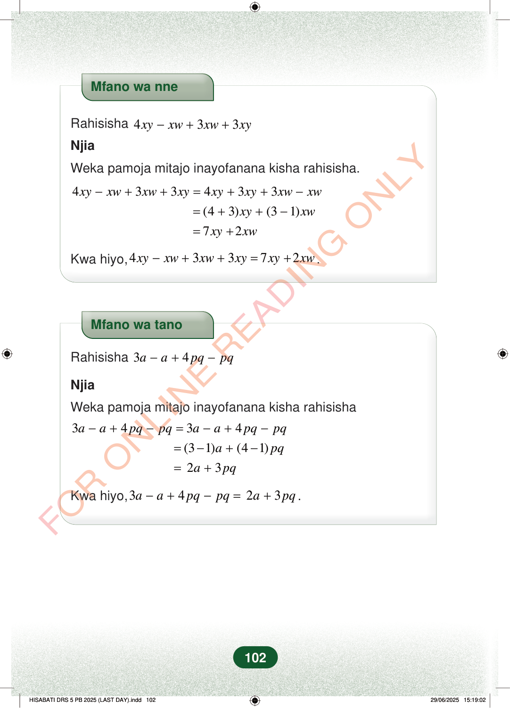

Mfano wa nneRahisisha433xyxwxwxy−++NjiaWeka pamoja mitajo inayofanana kisha rahisisha.−++=++−433433xyxwxwxyxyxyxwxw=++−(43)(31)xyxw=+72xyxwKwa hiyo,43372xyxwxwxyxyxw−++=+.Mfano wa tanoRahisisha34aapqpq−+−NjiaWeka pamoja mitajo inayofanana kisha rahisisha−+−=−+−3434aapqpqaapqpq=−+−(31)(41)apq=+23apqKwa hiyo,3423aapqpqapq−+−=+.102Mfano wa nne
Rahisisha 4 3 3 xy xw xw xy − + +
Njia
Weka pamoja mitajo inayofanana kisha rahisisha.
4 3 3 4 3 3
xy xw xw xy xy xy xw xw
(4 3) (3 1)
xy xw
7 2
xy xw
Kwa hiyo, 4 3 3 7 2 xy xw xw xy xy xw − + + = + .
Mfano wa tano
Rahisisha 3 4 a a pq pq − + −
Njia
Weka pamoja mitajo inayofanana kisha rahisisha
3 4 3 4
a a pq pq a a pq pq
(3 1) (4 1)
a pq
2 3
a pq
Kwa hiyo, 3 4 2 3 a a pq pq a pq − + − = + .
102
Mfano wa nne unaonyesha kurahisisha 4xy − xw + 3xw + 3xy kwa kuweka pamoja mitajo inayofanana. Jibu la mwisho ni 7xy + 2xw.Mfano wa nne<math><mrow><mpadded lspace="0"><mi>Rahisisha</mi></mpadded><mtext> </mtext><mn>4</mn><mi>x</mi><mi>y</mi><mo>−</mo><mi>x</mi><mi>w</mi><mo>+</mo><mn>3</mn><mi>x</mi><mi>w</mi><mo>+</mo><mn>3</mn><mi>x</mi><mi>y</mi></mrow></math>NjiaWeka pamoja mitajo inayofanana kisha rahisisha.4xy - xw + 3xw + 3xy = 4xy + 3xy + 3xw - xw= (4 + 3)xy + (3 - 1)xw= 7xy + 2xw<math><mrow><mrow><mrow><mi mathvariant="normal">K</mi><mspace></mspace></mrow><mrow><mi mathvariant="normal">w</mi><mspace></mspace></mrow><mrow><mi mathvariant="normal">a</mi><mspace></mspace></mrow><mtext> </mtext><mrow><mi mathvariant="normal">h</mi><mspace></mspace></mrow><mrow><mi mathvariant="normal">i</mi><mspace></mspace></mrow><mrow><mi mathvariant="normal">y</mi><mspace></mspace></mrow><mrow><mi mathvariant="normal">o</mi><mspace></mspace></mrow><mo separator="true" lspace="0em" rspace="0em">,</mo></mrow><mtext> </mtext><mn>4</mn><mi>x</mi><mi>y</mi><mo>−</mo><mi>x</mi><mi>w</mi><mo>+</mo><mn>3</mn><mi>x</mi><mi>w</mi><mo>+</mo><mn>3</mn><mi>x</mi><mi>y</mi><mo>=</mo><mn>7</mn><mi>x</mi><mi>y</mi><mo>+</mo><mn>2</mn><mi>x</mi><mi>w</mi><mi>.</mi></mrow></math>Mfano wa tano unaonyesha kurahisisha 3a − a + 4pq − pq kwa kuweka pamoja mitajo inayofanana. Jibu la mwisho ni 2a + 3pq.Mfano wa tano<math><mrow><mpadded lspace="0"><mi>Rahisisha</mi></mpadded><mtext> </mtext><mn>3</mn><mi>a</mi><mo>−</mo><mi>a</mi><mo>+</mo><mn>4</mn><mi>p</mi><mi>q</mi><mo>−</mo><mi>p</mi><mi>q</mi></mrow></math>NjiaWeka pamoja mitajo inayofanana kisha rahisisha3a - a + 4pq - pq = 3a - a + 4pq - pq= (3 - 1)a + (4 - 1)pq= 2a + 3pq<math><mrow><mrow><mrow><mi mathvariant="normal">K</mi><mspace></mspace></mrow><mrow><mi mathvariant="normal">w</mi><mspace></mspace></mrow><mrow><mi mathvariant="normal">a</mi><mspace></mspace></mrow><mtext> </mtext><mrow><mi mathvariant="normal">h</mi><mspace></mspace></mrow><mrow><mi mathvariant="normal">i</mi><mspace></mspace></mrow><mrow><mi mathvariant="normal">y</mi><mspace></mspace></mrow><mrow><mi mathvariant="normal">o</mi><mspace></mspace></mrow><mo separator="true" lspace="0em" rspace="0em">,</mo></mrow><mtext> </mtext><mn>3</mn><mi>a</mi><mo>−</mo><mi>a</mi><mo>+</mo><mn>4</mn><mi>p</mi><mi>q</mi><mo>−</mo><mi>p</mi><mi>q</mi><mo>=</mo><mn>2</mn><mi>a</mi><mo>+</mo><mn>3</mn><mi>p</mi><mi>q</mi><mi>.</mi></mrow></math>